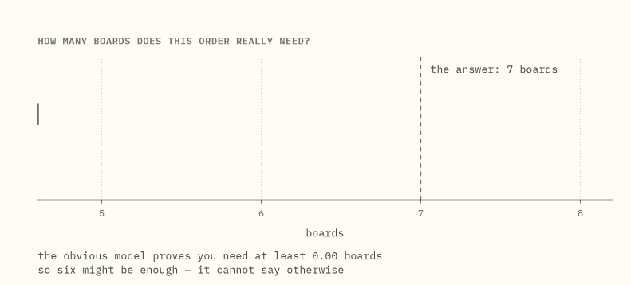
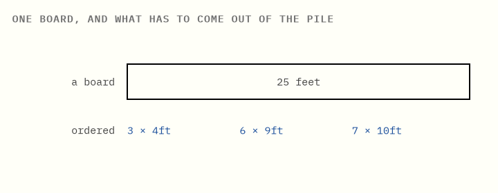
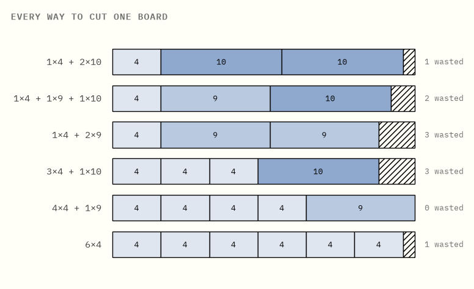
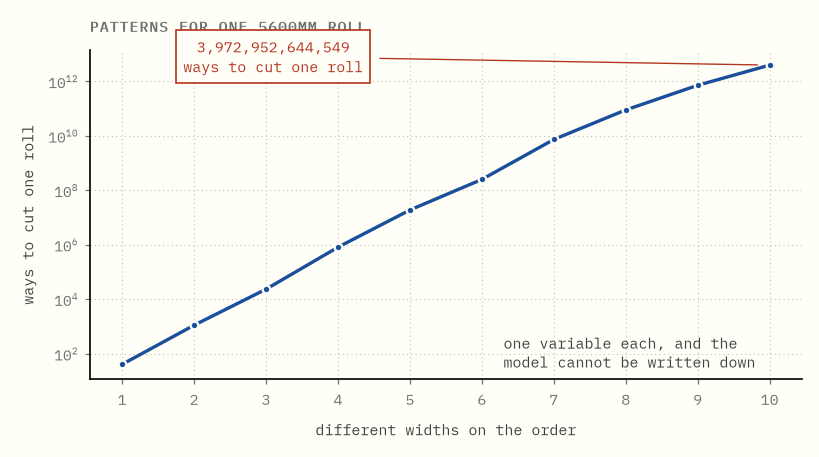
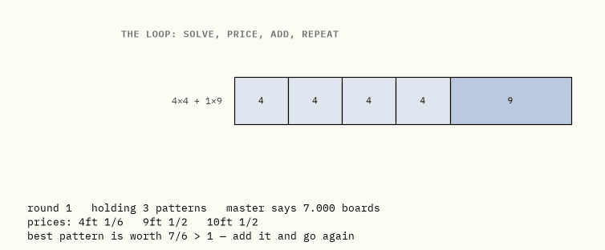

Ask the prices what you are missing
Column generation and branch-and-price, built from a cutting-stock order.
Here is a model with four trillion variables that fits on a napkin, and a way of solving it that never writes down more than a handful of them.
The duality guide gives you the check: prices that cover every option prove no plan beats your number. Run that backwards and it generates. An option the prices fail to cover is a missing variable, and you can solve for it directly instead of hunting for it.
Numbers below come from the code in this folder, in exact rationals, asserted by its tests.
0What this is

An order has to be cut from standard boards, and the question is how many boards it takes.
The obvious model, relaxed, proves you need at least 5.44 boards. So six might be enough — the model cannot say otherwise.
A different model of the same order, relaxed the same way, proves you need at least 6.5. Six is now impossible. And seven boards can be cut, so seven is the answer, proved.
The second model has one variable for every way of cutting a board, which for a real order is a few trillion variables. This guide is about why that model is so much stronger, and how it gets solved without ever being written down.
1The order
A workshop buys boards 25 feet long and needs shorter lengths cut from them.

| ordered | length | how many |
|---|---|---|
| short pieces | 4 ft | 3 |
| medium pieces | 9 ft | 6 |
| long pieces | 10 ft | 7 |
Boards are identical and there are plenty of them. Each one is cut once, however you like, and the leftover at the end is waste — you cannot glue two offcuts together. Use as few boards as possible.
A pattern is one way of cutting one board. For this order there are only six worth using, in the sense that no further piece could be squeezed into the leftover:

Six is a small enough number to print, which is exactly why this is the order to learn on. Chapter 4 is where that stops being true.
2The obvious model, and why it is too weak
The natural way to model this is to decide, for each board, what comes off it: take a pile of boards, mark some of them "used", and assign pieces to them without overfilling any.
Relax that — let a board be 30% used, let a piece be split across two boards — and the answer it gives is:
total length ordered ÷ board length = (3×4 + 6×9 + 7×10) ÷ 25 = 136 ÷ 25 = 5.44 boards
That is a genuine lower bound and it is useless, because of what the relaxation quietly permits: the leftover at the end of one board carries over to the next. It is the answer you would get if boards were liquid. Round it up and six boards might do.
Six boards will not do. The relaxation cannot see it, because the fact that makes it impossible (a 10-foot piece sits on one board, whole) is precisely what was relaxed away.
3One variable per pattern
So model the decision differently. Instead of which pieces go on which board, decide how many boards to cut with each pattern.
Every pattern is a way of cutting a board that is already legal — the pieces fit, by construction. So the model has nothing left to say about fitting. It only has to say that enough pieces come out:
choose how many boards to cut with each pattern, to minimise the total number of boards, so that for each length, the pieces produced across all patterns cover the order.
Relax that — allow a fractional number of boards cut with a pattern — and the answer is 6.5 boards.
Two relaxations of the same order, an enormous distance apart. Integrality was not discarded this time. It was absorbed into the variables: every pattern is a whole-board decision already made correctly, so relaxing the count of patterns cannot un-decide it. What remains to relax does far less harm.
| says you need at least | so, at least | true answer | |
|---|---|---|---|
| the obvious model, relaxed | 5.44 boards | 6 | 7 |
| one variable per pattern, relaxed | 6.5 boards | 7 | 7 |
Here the second relaxation settles the question by itself, which is the reason to put up with everything that follows.
4Too many to write down
The catch arrives immediately. The strong model needs one variable per pattern, and patterns multiply.
A paper mill cutting a 5600mm roll into ten ordered widths has this many ways to cut one roll:

3,972,952,644,549 patterns. One variable each. You cannot write that model down, you cannot store it, and you certainly cannot hand it to a solver.
Almost all of those variables are worthless. A good answer uses a handful of patterns and leaves the rest at zero. The difficulty is not the count. It is that you cannot tell which handful matters until the thing is solved.
5Start with a few, and let the prices ask for more
Start with a model that is obviously too small. Take a few patterns — say the lazy ones, each board cut into copies of a single length — and solve that. This is the restricted master: the real model, restricted to the columns you have bothered to write down.
For our order, starting with three lazy patterns, it says: 7 boards.
That is an honest upper bound, since those patterns really do fill the order. It is not the answer to the strong model, which has three more patterns nobody has written down. Whether any of them would help, answered without adding them, is the whole method.
Solve the restricted master and read off its prices, one per ordered length. From the duality guide: these are what one more piece of that length would be worth. At the first round they come out as
| length | price |
|---|---|
| 4 ft | 1/6 |
| 9 ft | 1/2 |
| 10 ft | 1/2 |
Now take any pattern, written down or not. Cutting a board with it costs one board. The pieces that come off it are worth, at these prices, some amount. So the pattern is worth adding exactly when
the pieces it yields are worth more than one board.
That comparison is the reduced cost. It needs nothing but the prices, so a pattern nobody has written down can still be judged by it.
This is the same statement as dual feasibility. The prices from the restricted master satisfy every dual constraint belonging to a pattern you have got. If they satisfy the constraints of all the patterns you have not got too, they are feasible for the full problem's dual, and the restricted answer is the full answer — proved, without ever building the full model. A pattern that violates its dual constraint is a missing column, and the two things are the same thing seen from opposite sides.
6Asking for a pattern is a knapsack
The question is whether some unwritten pattern yields more than one board's worth at these prices.
Do not search the list. Build the answer. Fill one 25-foot board so as to maximise the total value of the pieces taken off it, at the current prices. That is a knapsack problem, small and standard, and its answer is the best pattern in existence at these prices, including every one nobody has written down.
At the prices above the knapsack returns four 4-foot pieces and one 9-foot piece, worth 4×(1/6) + 1×(1/2) = 7/6. More than one board, so that pattern is missing and it goes into the model.
Pricing is where the work happens, and note what it returns: the argmax over every column, or a proof that none is worth adding. Not a candidate list. When the knapsack's best is worth 1 or less, nothing anywhere would help, and the restricted model is optimal for the full one.
Try it yourself → Set the three prices by hand and watch which pattern the knapsack builds.
7The loop, and why it is allowed to stop
Put the two halves together and they take turns.
Column generation
- Start with any set of patterns that can fill the order at all.
- Solve the restricted master. Read off the prices.
- Solve the knapsack at those prices.
- If its best pattern is worth more than one board, add it and go to 2.
- Otherwise stop: no pattern in existence would help, so the restricted answer is the full model's answer.

Watch the number come down: 7 boards, then 6.875, then 6.5. Then the knapsack returns a pattern worth exactly 1 and the loop stops. Three patterns added, and 6.5 boards is optimal for a model nobody wrote down.
Be exact about what step 5 claims. Not that no better answer exists: that no column exists which would improve this one. The knapsack searched every pattern implicitly rather than sampling some, so it is a proof.
On a slightly bigger order — 55-foot boards, four different lengths — there are thirty usable patterns, and the loop settles after touching six of them:

Twenty-four patterns were never written down and never needed to be. On the mill instance the same sentence holds with four trillion in place of twenty-four.
Try it yourself → Step the loop one round at a time and watch the prices move.
8Branching, when the answer is 6.5 boards
Nobody cuts half a board. The relaxation says 6.5, and 6.5 is not a plan.
For this order rounding up happens to be right, and for cutting stock it nearly always is. The relaxation is famously tight; instances where rounding up is wrong are rare and awkward to construct. But "nearly always" is not a proof, and a rounded bound is a number rather than a set of cuts. To get something you can take to the saw, the fractions have to be branched away.
Hence branch-and-price: branch-and-bound in which the relaxation at every node is itself solved by generating columns.
At each node
- Impose the node's branching decisions on the master.
- Solve that relaxation by column generation — the full loop, at every node.
- Prune if it is infeasible, or if its bound cannot beat the best plan found.
- If the answer is whole, record it. Otherwise pick a fractional pattern count and split: one child uses it at most ⌊x⌋ times, the other at least ⌈x⌉.

Each box hides a complete solve-price-add cycle. The tree stays small because it starts from a bound that is already nearly right, which is chapter 3 being repaid. Branch-and-price is branch-and-bound with a far better relaxation and a way of holding that relaxation implicitly.
Two traps, both of which cost this repository real answers
This is where the theory bit back. Both failures produced entirely reasonable looking trees and entirely wrong numbers.
A branching row has a price too. Tell a node "use this pattern at most zero times" and that restriction acquires a dual value, which inflates that one pattern's reduced cost. The knapsack then keeps nominating a pattern the master already holds and has pinned at zero. Reading that as "no improving column exists" stops the loop early and leaves the node's bound too high; in a minimisation, a bound that is too high prunes the optimum.
A restricted master can be infeasible at a node that is perfectly feasible. The columns that would have met the demand simply have not been generated yet. Declaring the node infeasible throws away real solutions. The fix is to give the master emergency columns at a punitive price, so it always has an answer and can produce prices; they fall out on their own as real patterns arrive.
The first version of the solver in this folder had neither fix, and disagreed with brute force on 476 of 1230 test instances. It now agrees on all of them. Neither bug announced itself — the trees looked sensible and the answers looked plausible, and only running every small instance against an independent brute-force solver revealed it.
One more admission. Branching on a single pattern's count, as above, is a weak rule. Real implementations use Ryan–Foster branching, which splits on whether two pieces share a board and pushes the restriction down into the knapsack itself. This guide keeps the simpler rule for legibility and pays for it in tree size.
9Where this leads
The shape of what just happened is more general than cutting boards.
Dantzig–Wolfe decomposition is the name for what chapter 3 did. A problem with block structure is rewritten so its variables are whole feasible solutions of one block rather than the block's individual variables. Here the block is "one board" and its feasible solutions are the patterns. The new relaxation sits between the integer hull and the naive relaxation, which is the general reason it is tighter and why anyone tolerates the extra machinery.
Column generation is how you optimise over those solutions without listing them. The pricing problem generates them on demand, producing precisely the extreme points of the block that the current prices ask for.
Benders decomposition points the same idea the other way. It generates rows rather than columns: fix the hard decisions, solve what is left, and take the dual of that leftover problem as a new constraint to send back. Every Benders cut is a price list doing exactly the job it did in chapter 5, proving a proposal cannot be as good as it claims.
When pricing is just filtering a list
A case that resembles the above and is not.
Suppose the columns are not defined by a polyhedron but pre-generated — a fixed list of candidate driver schedules, say, computed in advance. Then there is no optimisation problem to solve for the best column; you scan the list and take the best reduced cost. The algorithm still works, and the surrounding branch-and-price machinery is unchanged.
But it is no longer generating the extreme points of a block. It is reduced-cost filtering of a discretised approximation of one, and the bound you get is a bound for that approximation. If a schedule you needed is absent from the list, nothing in the method will ever say so. Whatever produced the list made a modelling decision on your behalf.
What the plain words are really called
| this guide says | everyone else says |
|---|---|
| a pattern | a column |
| the model with one variable per pattern | the Dantzig–Wolfe reformulation / master problem |
| the model with the patterns you bothered to write down | the restricted master problem |
| a price for each ordered length | a dual variable |
| worth more than one board | negative reduced cost |
| asking for a pattern | the pricing problem / subproblem |
| the loop | column generation |
| the loop inside a search tree | branch-and-price |
| the obvious model, relaxed | the natural LP relaxation |
| generating rows instead of columns | Benders decomposition |
Further reading
The cutting-stock treatment here follows the spirit of chapters 2.2 and 8 of Integer Programming by Conforti, Cornuéjols and Zambelli, which is the place to go next and does properly what this page does with pictures.
Running the code
make venv # once, from the repository root
make test # re-check every number this page quotes
make figures # re-render every image
The solver reuses the exact-fraction simplex from the duality topic rather than carrying a second copy of it — this topic really is that one under load. The tests check the mathematics, the prose against the code, and branch-and-price against a brute-force solver that enumerates every pattern.